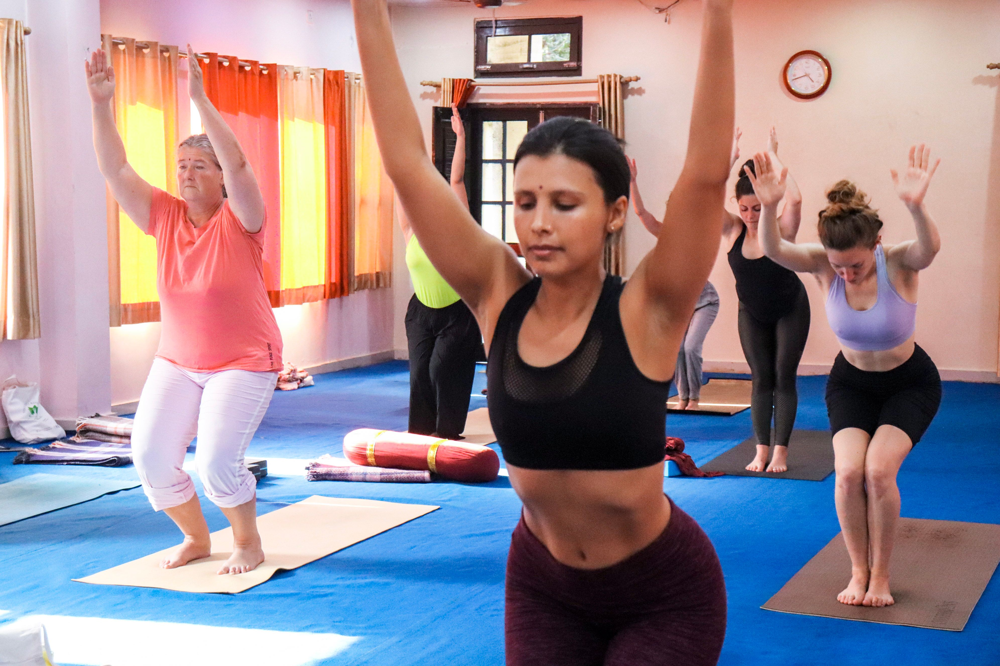
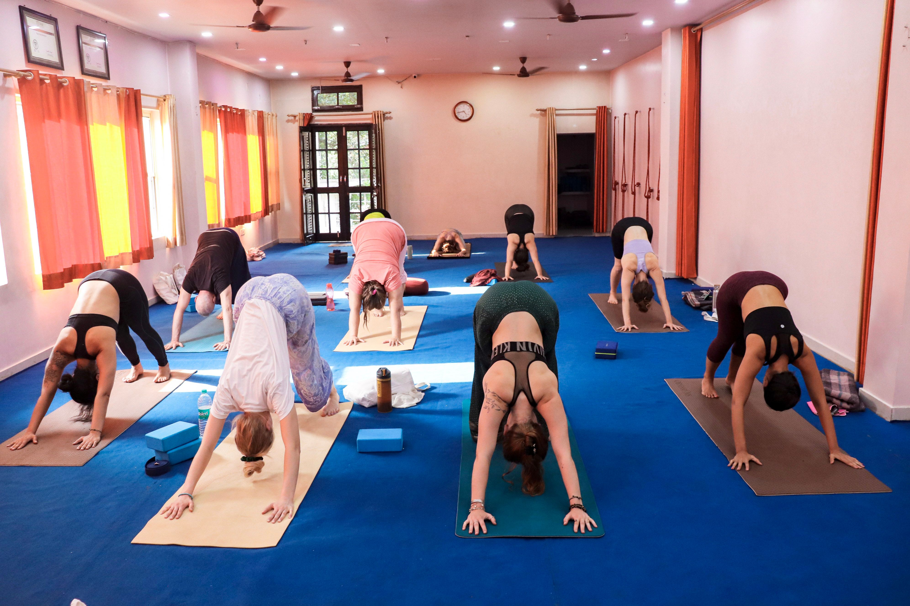
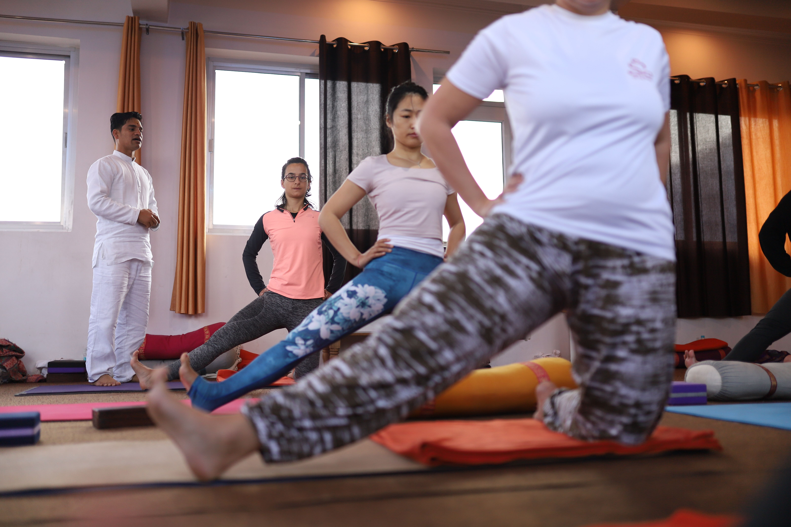
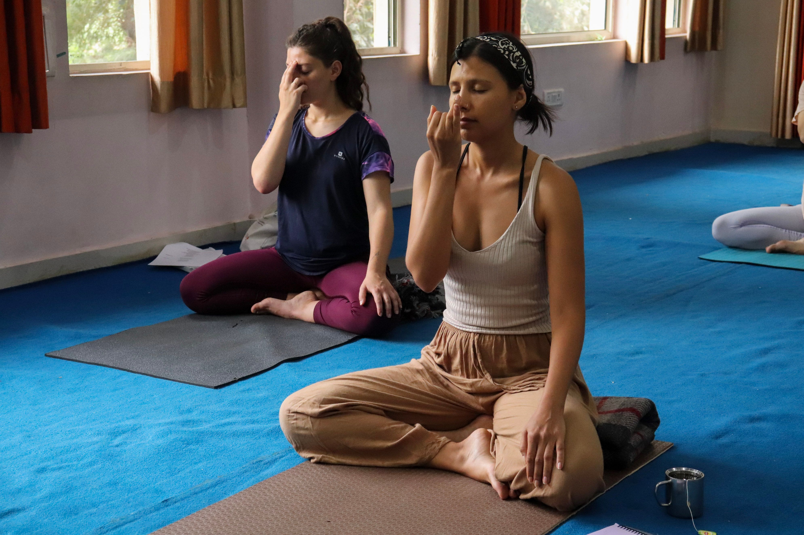
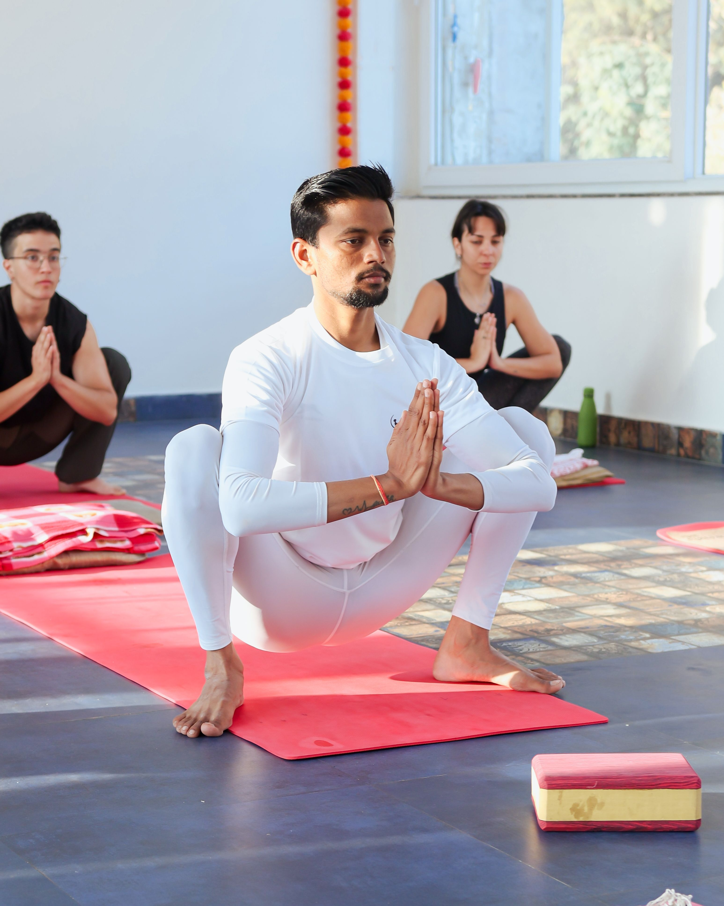
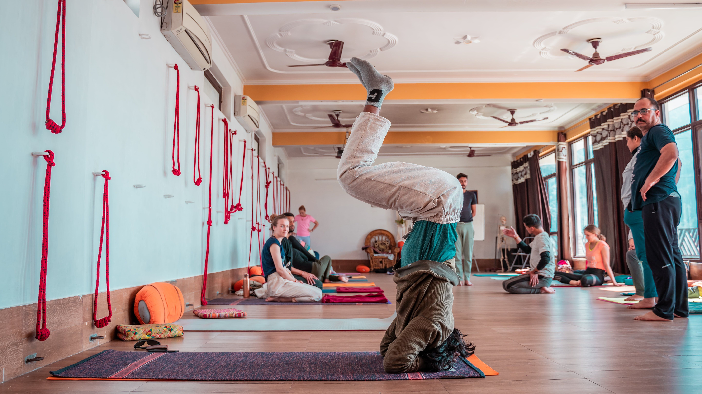
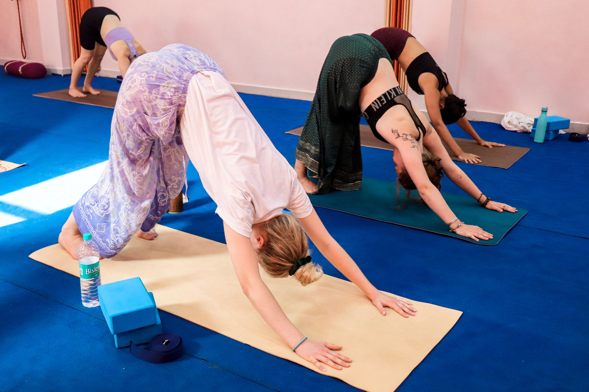
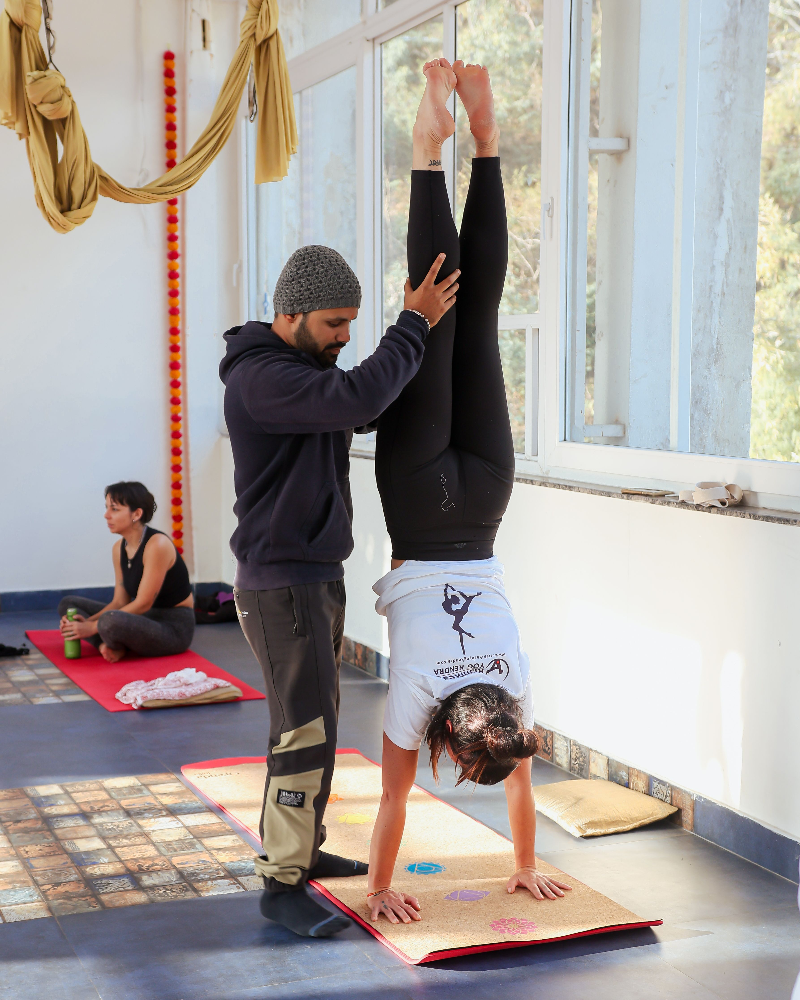
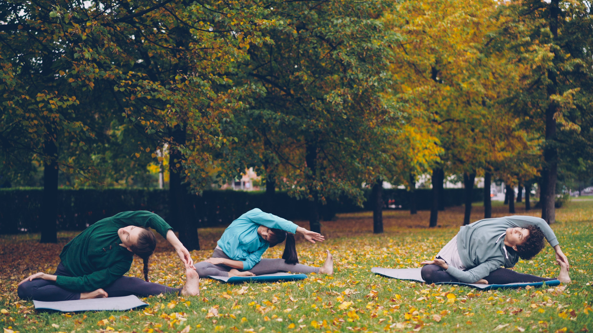
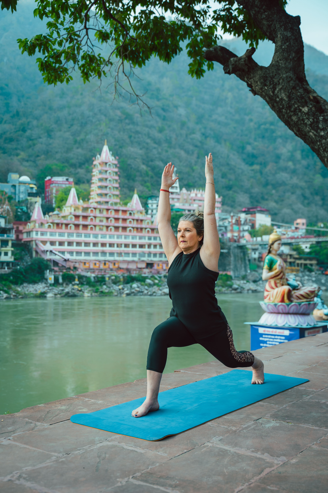

The Yogadyah gallery
Moments on the mat.
Movement, stillness, and the simple act of showing up.










The Yogadyah gallery
Movement, stillness, and the simple act of showing up.









